01 Screens
Every picture below is a straight capture from VICE, scaled with no smoothing — what you see is what the VIC-II draws.
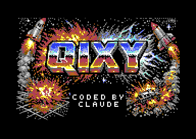
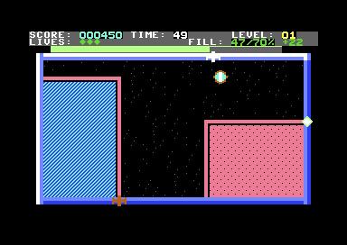
FILL 47/70%: the target for level 1 is 70%.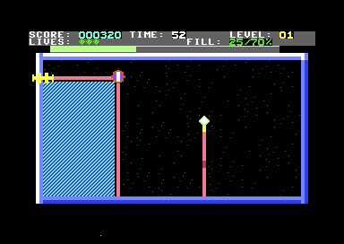
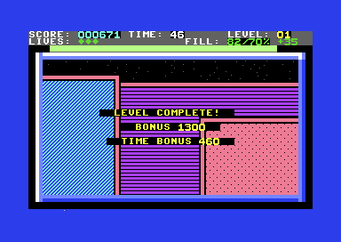
(level + overshoot) × 100 = 1300 points, plus 10 points for every second left on the clock. A big saved-for-last claim is worth planning.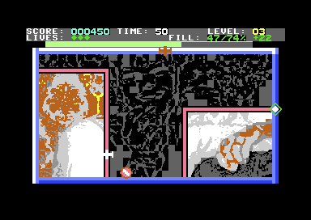
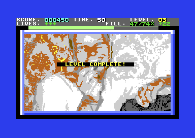
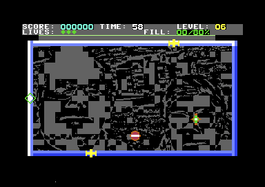
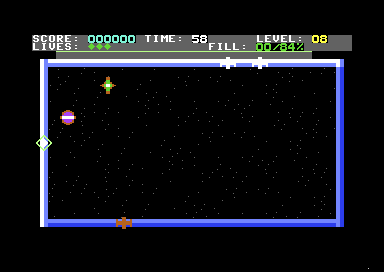
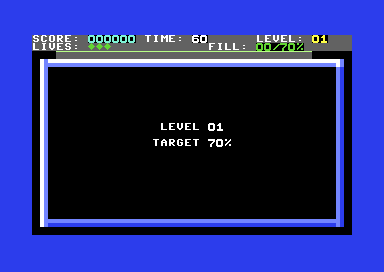
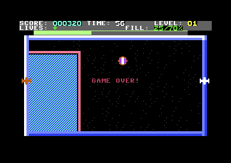
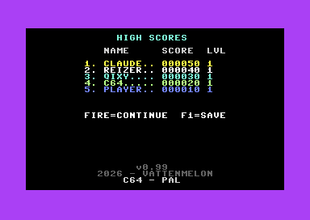
C64 - PAL.02 Features
Slow draw, fast draw
Fire starts a line. Keep it held and you draw at half speed for double points and the woven texture; let go and you dash at full speed for normal points. Release even once and the whole claim drops to 1×. Every line is a bet.
The fuse
Hesitate for half a second mid-draw and a spark lights at the base of your trail and burns towards you, a tile every six frames, flickering red and orange over the pink line. Lay any tile to put it out. Once you commit, you're committed.
Photo levels
Levels 3, 6, 9, 12 and on hide a picture under a grey etching. Claims reveal it piece by piece; clearing the level floods the whole image in. Four pictures rotate — the fourth is an e-mail about knekkebrød, typeset live on the C64 instead of stored as an image.
Claim textures
On starfield levels every fast claim is filled with a material picked at random — brick, grid, slats, dots or checkerboard — in a colour that cycles as the level goes on. Slow claims get the diagonal two-tone weave, so the bonus is visible at a glance.
Endless, on the clock
Sixty seconds per level, the digits turning red for the last ten. The clear target rises from 70% to a 90% cap, the enemies ramp for 25 levels, and the level counter never wraps. Your run ends when your lives do.
Bonuses that reward nerve
Clearing pays (level + overshoot) × 100, where overshoot is how far past the target you finished, plus 10 points per second left. A spare life every 5,000 points, and an instant one for a single claim of 50% or more.
SID synth-pop
"Claiming On My Own": a 125 BPM four-on-the-floor groove with offbeat hats and a pulse bass whose width is swept every frame. It fades out when you press fire and back in as level 1 starts; game over gets a slow, sad arrangement.
Knows your machine
Detects PAL or NTSC, C64 or C128, and an Ultimate 64 or Ultimate-II+ cartridge, and prints the result on the high-score screen. On a C128 the CPU runs at 2 MHz in the border and fills territory several times faster.
Attract mode & saved scores
The title and the high-score table swap every ten idle seconds. Five high scores with names and levels are kept in a table you can write to disk with F1; the game reloads it at boot.
03 Enemies
The Qix
A round plasma orb with a spinning white-hot core, bouncing through the unclaimed area and changing direction on a whim. Touching your live trail while you draw costs a life; old, settled lines just bounce it. It is a multicolor sprite — orange rim, white core, a body colour that cycles.
The plasma star
From level 6, a second Qix: a spiky four-pointed star that stretches tall, then wide, twinkling green and white. It roams free like the first — but enclose it in a claim and it bursts. The region you fence off is always the one the Qix is not in.
Sparx
Eight-point starbursts that patrol the border and any line you have settled, never your live trail. Two at level 1; from level 8 a third runs the other way round. Their pace ramps from a move every four frames to every three — your own speed — at level 25, and holds there.
The fuse
Not a creature, but the thing that kills most players. Stall on a line for 30 frames and it lights. Sparx will not walk your live trail; the fuse is what gets you if you stand on it.
The clock
Sixty seconds a level, frozen while you are dead, paused, or reading the level card. At zero the digits flash 00 in red and you lose a life; the timer resets on respawn.
04 Controls
| Input | Action |
|---|---|
| Joystick port 2 | Move along the border and settled lines |
| Fire + direction, off an edge | Start drawing into open territory |
| Hold fire while drawing | Slow draw: half speed, double points, woven fill |
| Release fire while drawing | Fast draw: full speed, normal points |
| Fire on the title | Start a game |
| P | Pause; any key or stick input resumes |
| Keyboard, RETURN | Type your name on the high-score entry screen |
| F1 on the high-score table | Save the table to disk (file QIXY-HISCORE) |
| Fire on the high-score table | Back to the title |
05 How to play
- Goal. Claim the target share of the field — 70% on level 1, two points more each level up to 90% — before the sixty-second clock runs out.
- Draw. You live on the border. Push off it with fire held and you start a line; bring the line back to the border or to a settled line and everything you fenced off, on the side without the Qix, fills in and scores.
- Choose your speed. Keep fire held for a slow, careful line worth double. Let go to sprint back to safety for single points. One release anywhere drops the whole claim to 1×.
- Don't stop. A stalled line lights the fuse. Keep laying tiles or finish the line.
- Stay alive. The Qix kills you if it touches your live trail. Sparx kill you if they reach you on the border or on settled lines. You start with three lives and a second of invulnerability after each respawn.
- Trap the star. From level 6 the second Qix can be destroyed by enclosing it inside a claim.
| Event | Points |
|---|---|
| Each tile claimed, fast draw | 1 |
| Each tile claimed, slow draw (fire held for the whole line) | 2 |
| Level clear | (level + % over target) × 100 |
| Each second left on the clock at level clear | 10 |
| Extra life | every 5,000 points, or one claim ≥ 50% |
Example: clearing level 5 at 85% against a 75% target pays (5 + 10) × 100 = 1,500, on top of the tiles themselves and the time bonus. The score is six digits; the top five runs are kept.
06 Run it
On real hardware
Write qixy.d64 to a floppy, or put it on an SD2IEC / 1541 Ultimate / Pi1541, then:
LOAD "QIXY",8,1 SEARCHING FOR QIXY LOADING READY. RUN
The disk carries the Exomizer-crunched build, about half the size of the raw program, so a real 1541 loads it in a fraction of the time. Joystick in port 2. Works on a C64, a C128 in 64 mode, and an Ultimate 64.
Build from source
One main source file, qixy.asm, in ACME syntax, plus generated data files for the title and level pictures. Exomizer and c1541 (from VICE) are optional: without them you still get a working qixy.prg.
git clone https://github.com/vattenmelon/qixy.git cd qixy make # acme -f cbm -o qixy.prg qixy.asm make crunch # -> qixy_crunched.prg (needs exomizer) make disk # -> qixy.d64, crunched if exomizer is present make run # build and launch in x64sc
07 Under the hood
About ten thousand lines of 6510 assembly, running in hires bitmap mode with hardware sprites, that has quietly colonised every corner of the C64's memory map — including the RAM under the BASIC and KERNAL ROMs and the cassette buffer.
Incremental flood fill
Closing a line kicks off a six-phase state machine — trail conversion, flood, claim, restore, percentage, settle — that runs a fixed budget of operations per frame (8 flood steps, 32 scan steps on a C64) so a big claim never drops a frame. Play continues while the paint dries; the grace timer covers you meanwhile.
Ghost and reveal
On a photo level the picture is painted with the display blanked, every interior cell (8 bitmap bytes + colour) is stashed under the KERNAL ROM at $E000, and the visible field is ghosted to dark grey. Claiming a cell copies it back from the stash — which also heals any trail or fuse scribbles. The stash reads the painted screen, so it works for RLE-compressed images and the run-time-typeset e-mail alike.
Self-modifying textures
All claim patterns share one page and are drawn by a single self-modifying routine that takes the pattern's low byte in A. The material is rolled once per claim so a whole region shares it; the slow-draw weave gets a darker partner colour from a second table.
Fixed-point enemies
Qix and Sparx speeds are per-frame increments in 1/64-tile units banked into an accumulator, so a level's pace can be anything between "a tile every six frames" and "a tile a frame" without any frame-skipping jitter. Both ramp through lookup tables from level 1 to 25.
Sprites
The main Qix is a four-frame multicolor plasma orb, the second a two-frame plasma star generated by a script; both share orange-rim / white-core multicolours. Sparx are hires starbursts drawn with the VIC's 2× hardware expansion. Sprite shapes are copied up into VIC bank 1 once per game.
A raised neon bezel
The playfield frame is a three-tone bevel — white highlight top and left, light-blue face, blue shadow bottom and right — from two hires patterns and per-edge colour pairs. Level pictures are packed to the 36×19 interior so they can never overwrite it.
2 MHz on a C128
When the VIC-IIe registers say C128, a raster interrupt chained ahead of the KERNAL's switches the CPU to 2 MHz for the border and vertical blank and back to 1 MHz for the visible picture, since fast mode corrupts the display. The freed third of a frame goes into far higher fill budgets, so claims complete in a few frames.
Machine detection
PAL or NTSC from the raster-line count; C64 or C128 from whether $D02F/$D030 are real registers or open bus; Ultimate hardware from the UCI identification register at $DF1D, followed by a bounded GET_HWINFO handshake that reads the model name to tell an Ultimate 64 from an Ultimate-II+.
Loading time
The raw program is 50 KB, of which two fifths are zero-filled gaps in the memory map. Exomizer crunches it to about 22 KB, self-decrunching and auto-running, which is what the D64 ships — roughly 89 disk blocks instead of 196.